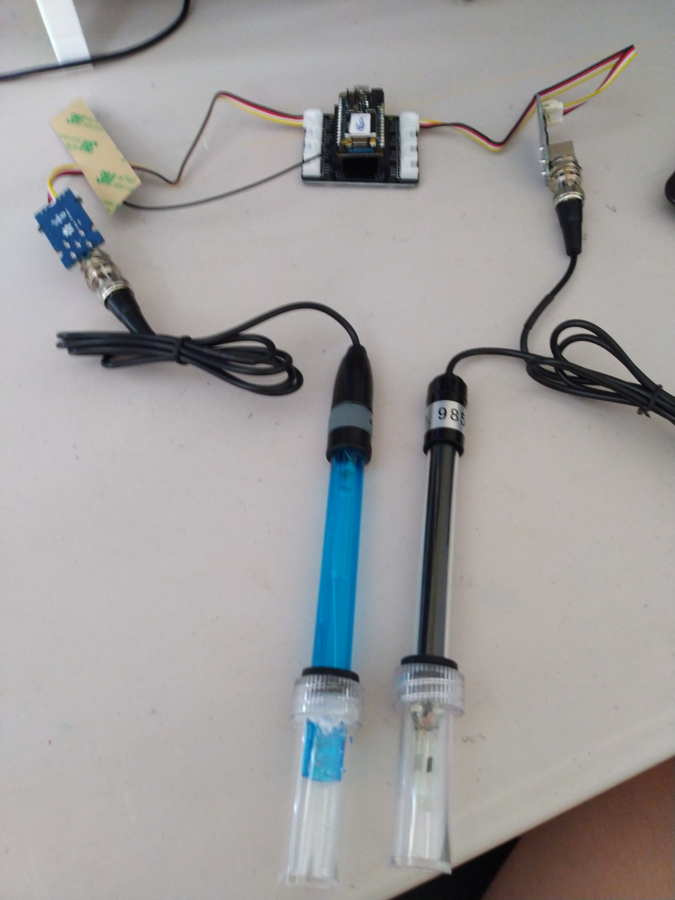
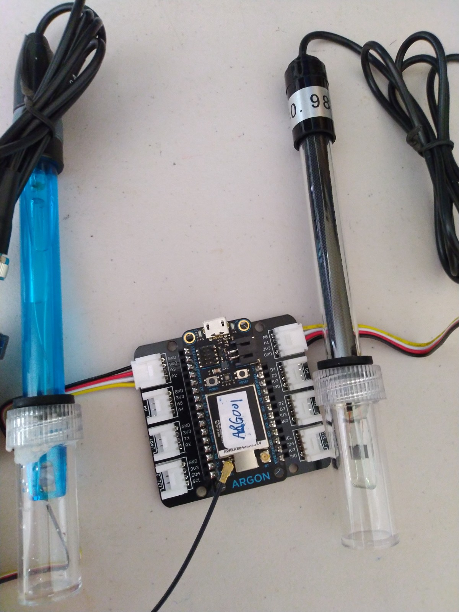

6. Grove - EC & PH Sensor Kit with Particle Photons#
This the sensor we are going to build in this exercise.
{kind=link}

This guide is based on these materials:
We will need the following hardwares:
A Particle Argon (Can be bought here)
USB Data Cable
Grove - EC Sensor Kit (Can be bought here)
Grove - PH Sensor Kit (E-201C-Blue) (Can be bought here)
Grove Shield FeatherWing for Particle Mesh and all Feathers (Can be bought here)
Jumper Wires x 4 (Can be bought here)
Breadboard (Can be bought here)
Soldering Kit (Can be bought here)
Laptop or Computer
Connect the Argon, Grove shield, Grove - EC Sensor and Grove - PH Sensor as shown. The EC sensor to the A0 connector and the PH Sensor to the A2 connector.

Refer to ../030/0318subtask18 to register the Argon Device with our Particle account.
Flash the script ‘STAPI_1_PH_1_EC’ to the Argon. Fill in the mandatory parameters accordingly. You can choose to leave the optional parameters to their default values.
============================================================================================= !!! MANDATORY PARAMETERS ============================================================================================= String thingDesc = "water quality of greenhouse"; //DESCRIBE THE DEPLOYMENT int sample_rate = 10 * 1000; // how often you want device to publish where the number in front of a thousand is the seconds you want ============================================================================================= OPTIONAL PARAMETERS (this parameters only works when it is the first time registration of the device) (if the device is already registered, these options are ignored) ============================================================================================= //Description of the location String foiName = "na"; //THE LOCATION NAME String foiDesc = "na"; //Define the geometry of the location. Geometry types from geojson is accepted. Refer to https://tools.ietf.org/html/rfc7946 for geometry types. String locType = "Point"; String enType = "application/vnd.geo+json"; //Define the location of the thing. If location is not impt, use [0,0,0] the null island position. float coordx = 0.0; //lon/x float coordy = 0.0; //lat/y float coordz = 0.0; //elv/z
Refer to ../030/0319subtask19 to visualize the data on Grafana.
Calibrate the sensors according to the guide.
{kind=link}